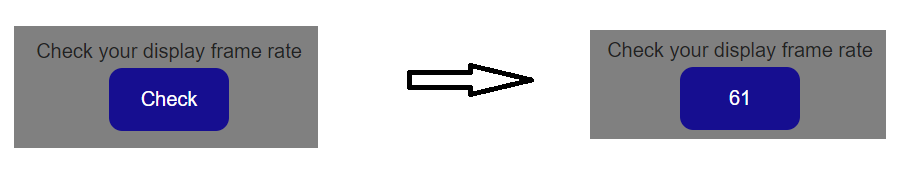

R
yu
Menu
Home
About
Resume
Projects
Contact
Projects
Home
Projects
C3D File Web Viewer
C3D File Web Viewer
프로젝트 기간: 2020.11.16 ~ 2020.12.13 (1개월)
개발 인원: 1명
1. 주제 및 기획의도
주제: C3D 파일 시각화 웹 애플리케이션 개발
기획의도
웹 애플리케이션 형태의 C3D 파일 뷰어가 존재하지 않는다.
다양한 기기에서 사용할 수 있고 설치가 필요없는 플랫폼 독립적인 웹 애플리케이션으로 구현하여 이용이 편리하다.
사용자 디스플레이 frame rate에 맞춰 실제 움직임 속도에 맞게 애니메이션을 보여줄 수 있다.
2. 개발환경
OS: Windows 10
Web Framework: Flask
Tools: Visual Studio Code
사용언어: Python, HTML5, CSS3, JavaScript
사용기술: Canvas, JQuery, Three.js
3. 주요기능 및 담당업무
사용자 디스플레이 Frame Rate 확인
requestAnimationFrame을 활용한 사용자 디스플레이 Frame Rate 체크

애니메이션 출력
Canvas, Three.js를 활용하여 3D 마커 출력
requestAnimationFrame을 사용하여 Scene 연속 출력
사용자 디스플레이 Frame Rate에 맞춘 애니메이션 속도 조절
마우스를 이용해 카메라 조작 가능